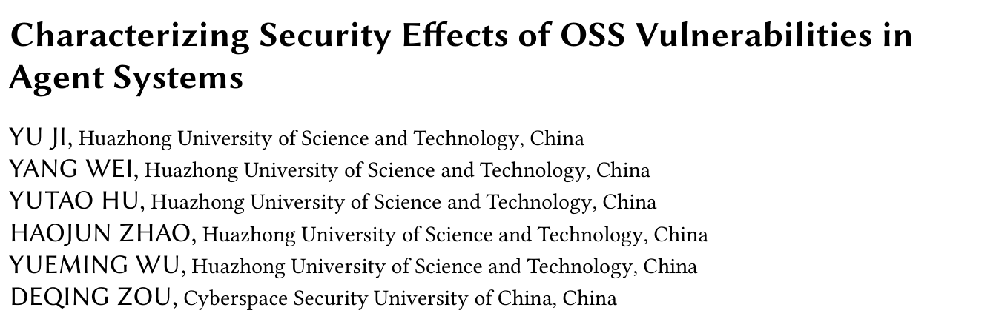
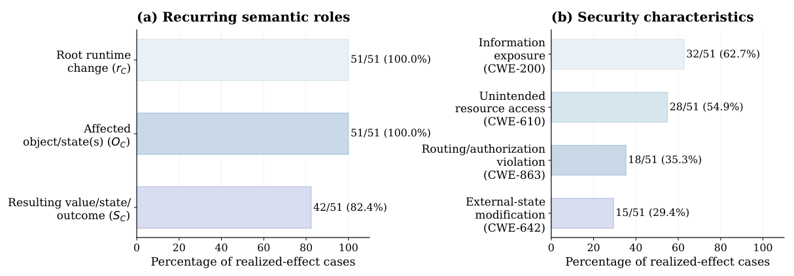
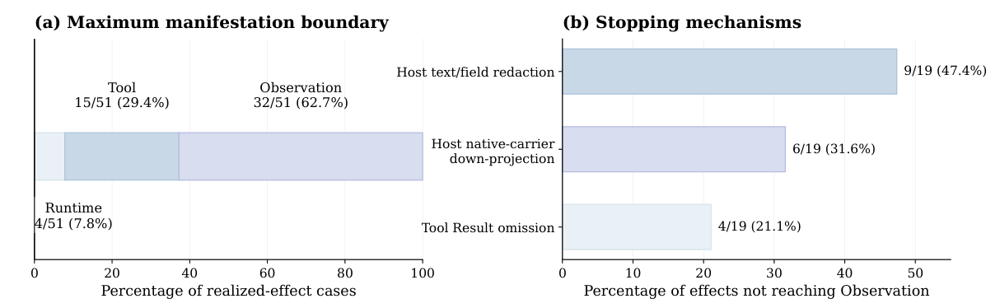
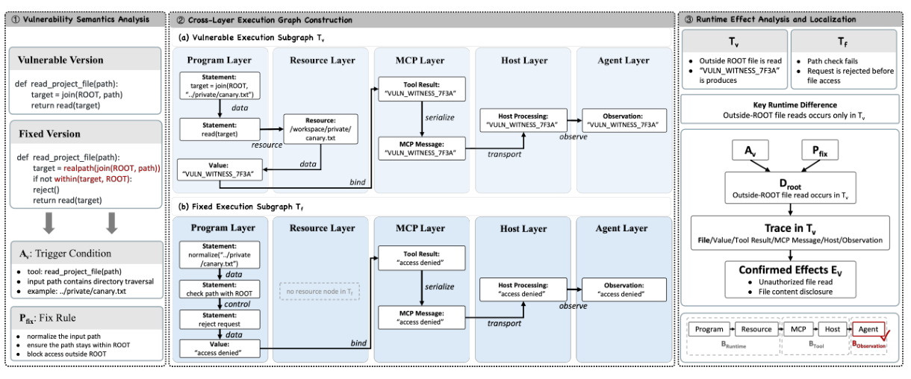
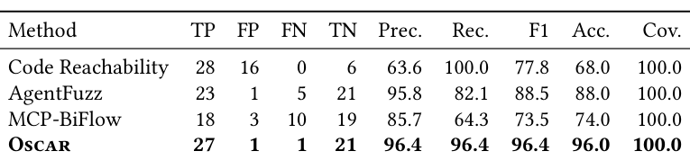
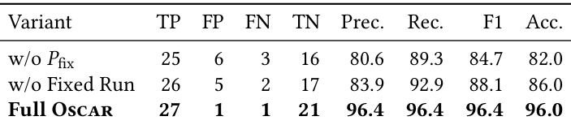
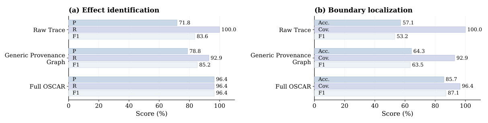
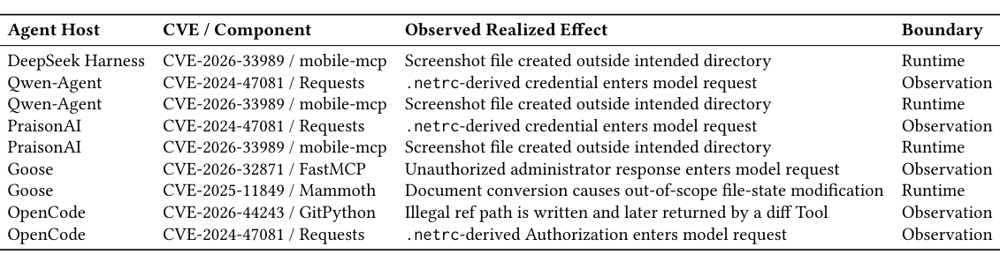

本文看点
01
62.7%的后果传进模型
02
后果识别F1达96.4%
03
303个CVE仅9个生效
01
PAPER INFO
论文信息
【论文题目】Characterizing Security Effects of OSS Vulnerabilities in Agent Systems
【论文链接】https://arxiv.org/abs/2610.05036
【作者团队】华中科技大学、中国网络空间安全大学

— 论文题头
本文来自华中科技大学吴月明、邹德清老师团队，2026 年 10 月挂上 arXiv。这是一篇把软件供应链漏洞分析和 Agent 安全接起来的工作：Agent 依赖的开源组件有了已知漏洞，这个漏洞在 Agent 里到底会不会出事，出了事又能传多远。
02
OVERVIEW
导读
今天一个 Agent 能干活，靠的是一整套开源软件栈：Agent Host（运行 Agent 的宿主程序）、工具、MCP Server，以及它们底下的协议库、解析器、HTTP 客户端、存储组件。这些组件和普通软件一样，会有公开披露的 CVE。
传统的软件成分分析（SCA）回答的是"你的依赖里有没有漏洞版本"。但在 Agent 里，这个答案远远不够。一个漏洞即便被触发，它造成的后果可能停在底层运行时，也可能顺着工具返回值、宿主处理一路进入模型看到的上下文，再影响 Agent 下一步的决策。同一个 CVE，在 Agent 里造成的风险可以差别很大。
这篇论文的核心贡献：
一个先导研究：52 个 Agent 场景里的真实漏洞案例，总结出漏洞后果的共同结构，以及后果会在三个层级上停下来。
一个方法 OSCAR：把同一个 Agent 任务分别跑在有漏洞版本和修复版本上，对比两次执行的差异，判断漏洞有没有真正造成后果，并定位后果最远传到了哪一层。
一个真实框架上的结果：在开源多 Agent 科研框架 ARIS 的 5 个 Agent Host 上，依赖扫描报出 303 个 CVE，其中 25 个能被正常功能触发，最终确认真正造成后果的是 9 个。
03
PROBLEM
痛点：漏洞的后果会"变形"
为什么不能直接用已有的方法？论文指出了两头都接不上的问题。
软件供应链这一头，已有工作能判断依赖里有没有漏洞版本、漏洞代码是否可达、运行时是否真的执行到了。污点分析还能追踪数据流。但它们的前提是：沿着同一个值往下追。问题在于，漏洞一旦改变了资源状态、授权决策或外部响应，后面 Agent 各层看到的东西就已经不是原来那个值了。比如一个越权读文件的漏洞，读出来的内容可能被工具包成 JSON、被 MCP 序列化、被宿主截断或改写，最后进入模型上下文的是另一种形态。值对不上了，但安全后果还在。
Agent 安全这一头，已有工作关注工具输出和模型可见内容里有没有危险信息、Agent 行为是否越界。但它们很少能把 Agent 层的现象追溯回"是哪个开源组件的哪个已知漏洞造成的"。
两头之间缺的那一段，就是论文要补的：
给定一次 Agent 执行，目标 CVE 实际造成了什么安全后果？这个后果最远在哪一层还能被看到？
04
INSIGHT
先导研究：后果有固定结构，也有固定的"停止点"
作者先从开源漏洞库 OSV 里，把 MCP Server、Agent 工具及其依赖映射到已知漏洞，得到涉及 49 个开源项目的 52 个漏洞案例。每个案例都构造满足触发条件的输入，跑完整的 Agent 任务，记录从用户输入到任务结束的全部运行时轨迹。三名研究者独立分析，再统一标准复核。
发现一：后果的结构是固定的。 52 个案例里有 51 个确实产生了后果。所有后果都能拆成三部分：
根因变化：漏洞导致的最早一个安全相关的运行时行为，比如"读了允许目录之外的文件"；
受影响对象：这个行为作用到的文件、资源或状态，比如"那个目标文件"；
后续结果：由此产生的值或外部结果，比如"读到的文件内容"。前两项 51 个全有，第三项有 42 个（82.4%）。

— 图1：51 个已生效漏洞后果的结构（左）和安全特征（右）。所有后果都有根因变化和受影响对象，82.4% 还有后续结果。安全特征上，信息泄露占 62.7%，越界访问资源占 54.9%，路由或授权违规占 35.3%，篡改外部状态占 29.4%
发现二：后果传播会在三个边界停下。 作者把 Agent 的一轮执行拆成：底层运行时、工具返回结果、宿主处理、模型可见的观察内容（Observation）。51 个后果里：
32 个（62.7%）一直传到了模型可见的 Observation，也就是说模型真的"看到"了漏洞造成的结果；
15 个（29.4%）进入了工具返回结果，但被宿主处理掉了，没到模型；
4 个（7.8%）只停在底层运行时，比如文件已经被写到了不该写的地方，但工具返回值里完全没有体现。

— 图2：后果的最远传播边界（左）和没能到达模型的 19 个后果是怎么被拦下的（右）。最常见的是宿主对文本或字段做了删减（9 个），其次是宿主把图片、二进制等原生载体降级转换后丢失了后果（6 个），还有 4 个是工具返回值根本没包含这个后果
这两个发现直接决定了方法的设计。第一，判断"有没有出事"不能只看代码是否可达或是否被触发，要看有没有这三部分组成的实际后果。第二，追踪后果不能只盯着返回值往下走，因为有将近一成的后果根本不进返回值，而能进返回值的也会在宿主层被改写。
05
METHOD
OSCAR：三步把后果"对"出来
OSCAR（Open-Source CVE Analysis for Agent Runtime）分三步。论文用了一个贯穿全文的例子：一个 MCP 文件读取工具存在路径穿越漏洞。

— 图3：OSCAR 的整体流程。左：从漏洞描述和补丁中提取触发条件与修复规则；中：在有漏洞版本（上）和修复版本（下）上执行同一任务，构建跨越程序、资源、MCP、宿主、Agent 五层的执行图；右：对比两张图找出根因变化，重建后果并定位最远传播边界
第一步，提取漏洞语义。 从 CVE 描述、安全公告、PoC 里提取触发条件：什么接口、什么参数、满足什么条件能走到漏洞路径。例子里就是"读文件工具的路径参数里带有上级目录跳转"。再从补丁里提取修复规则：补丁消除了什么行为。例子里是"先规范化路径，确保它在允许的根目录内，否则拒绝访问"。
第二步，成对执行，构建跨层执行图。 在完全相同的任务、输入、宿主配置、工具集、容器和网络环境下，分别跑有漏洞版本和修复版本，唯一的区别是目标开源组件的版本。每次执行都记录成一张图，节点覆盖五层：程序层（函数、语句、值）、资源层（文件、外部状态）、MCP 层（工具调用、参数、返回、协议消息）、宿主层（宿主处理）、Agent 层（模型观察和动作）。边表示调用、控制、数据、资源访问、绑定、序列化、传输、观察等关系。
例子里，有漏洞版本读到了根目录之外的一个探针文件，拿到内容"VULN_WITNESS_7F3A"，这个值依次出现在工具返回、MCP 消息、宿主处理和模型观察里；修复版本在读文件之前就拒绝了请求，后面每一层看到的都是"access denied"。
第三步，找根因、重建后果、定位边界。
对齐两张图，找出所有差异。但差异不一定都是漏洞造成的，执行路径一分叉，后面会出现大量连带差异。所以每个差异都要过两道筛：符合触发条件，并且正好是补丁要消除的那种行为。通过筛选的最早那个差异，就是根因变化。
从根因出发，沿资源、数据、控制关系找到受影响对象和后续结果。
沿跨层溯源往上追，判断后果在哪一层还被"保留"着。这里的判断标准是语义而不是字节相等：宿主可能对内容做了过滤、格式化或转换，只要安全后果的语义还在，就算传到了这一层；反过来，如果只是带着一些和漏洞相关的诊断信息，后果本身已经不在了，就不算。
核心思路：用修复版本当"对照组"。同样的输入，补丁之后消失的那个行为，才是这个 CVE 真正造成的后果；而判断后果传到了哪一层，看的是安全语义有没有保留下来，不是原始值还在不在。
06
EVALUATION
实验：可达不等于生效，触发也不等于生效
作者另外构造了一个独立测试集：50 个案例，其中 28 个确实产生了后果（10 个停在运行时、8 个停在工具层、10 个到达模型），22 个没有。和开发阶段的案例按项目和漏洞家族完全隔开。
对比三类代表性的已有方法：
代码可达性分析：漏洞代码从工具入口可达就算有问题；
AgentFuzz：在 Agent 里做定向模糊测试，观察是否出现漏洞触发行为；
MCP-BiFlow：在 MCP Server 里追踪请求端到返回端的数据流。

— 图4：已知开源漏洞后果识别的主结果。OSCAR 在 50 个案例上精确率、召回率、F1 均为 96.4%，准确率 96.0%；代码可达性召回率 100% 但有 16 个误报，AgentFuzz 漏掉 5 个，MCP-BiFlow 漏掉 10 个
这张表最有意思的地方，是三个基线各自错在不同的地方，正好对应了"判断漏洞生效"的三种常见误区：
可达性分析：可达不等于生效。 它把 28 个真阳性全找到了，但 22 个阴性案例里误报了 16 个。其中 9 个是漏洞代码被执行到了，但输入根本不满足触发条件；另外 7 个是执行了漏洞相关的中间逻辑，却没有对资源、值或控制状态产生预期的改变。这就是用 SCA 报告做漏洞排查时最熟悉的痛：告警一大堆，大部分不会真出事。
AgentFuzz：触发不等于留下证据。 它要求看到漏洞触发信号，误报大幅减少（只有 1 个），但漏掉了 5 个。这 5 个漏洞改变了外部资源、文件或持久化状态，却没有产生异常返回值、崩溃或其他可观测的触发信号。后果实实在在发生了，只是不在它看的地方。
MCP-BiFlow：后果不一定走返回值。 它找到了全部 10 个传到模型的后果和全部 8 个停在工具层的后果，但停在运行时的 10 个一个都没找到。因为这些漏洞已经改了文件、进程或网络状态，却没有任何东西进入工具返回值，数据流也就无从追踪。
OSCAR 在 28 个阳性里找到 27 个，22 个阴性里正确排除 21 个。唯一的误报是把一个漏洞相关的中间控制行为错当成了后果；唯一的漏报是外部状态的变化找不到可靠证据，无法关联到对应的工具调用。
后果边界定位：28 个阳性案例里正确定位了 24 个，准确率 85.7%。3 个定位错误全都发生在"后一层的信息还算不算同一个后果"这个判断上：有一次工具返回里带了漏洞相关的诊断信息，被误认为后果传到了工具层；有一次宿主做了嵌套转换，改变了表示结构，OSCAR 没能识别出后果其实一直传到了模型。
07
ABLATION
消融：对照组和语义表示，缺一不可
论文做了两组消融，分别验证"归因"和"表示"两个设计。

— 图5：归因证据的消融。去掉补丁语义，F1 从 96.4% 降到 84.7%，多出 5 个误报；去掉修复版本的对照执行，F1 降到 88.1%，多出 4 个误报
归因这一组说明，补丁语义和修复版本执行各管一件事。 去掉补丁语义，版本之间和漏洞无关的差异（比如修复提交里顺带改的其他代码）就容易被算到目标 CVE 头上，误报明显增加。保留补丁语义、去掉修复版本执行，虽然还知道"补丁修的是什么行为"，但没法验证这个行为在修复版本里是否真的消失了，于是那些符合漏洞特征、但不是漏洞版本特有的行为也被误归因。补丁语义给出判断标准，修复版本执行提供验证证据。

— 图6：证据表示方式的消融。用同一批运行时证据，换成原始轨迹或通用溯源图来组织：后果识别 F1 分别为 83.6% 和 85.2%，边界定位准确率只有 57.1% 和 64.3%；完整 OSCAR 为 96.4% 和 85.7%
表示这一组更能说明问题。 三个变体用的是完全相同的证据，只是组织方式不同：
原始轨迹把所有运行时记录按顺序排着。它找全了 28 个阳性，但也把 11 个阴性误判为阳性，因为轨迹里混着普通返回值、报错信息、协议字段和各种执行差异，分不清哪些属于漏洞后果。在边界定位上更糟：28 个只定位对 16 个，有 6 个停在运行时、6 个停在工具层的后果都被"抬高"到了模型层，因为后面的阶段里出现了相关的差异。
通用溯源图加了执行和依赖关系，误报从 11 个降到 7 个，但边界定位只对了 18 个，工具层的 8 个里只对了 2 个。
这组结果坐实了一件事：后一层出现了相关的值或差异，不代表后果真的传到了那一层。要判断后果的边界，必须显式地知道每个运行时实体在后果里扮演什么角色（根因、对象、结果），以及它在被转换之后是否还保留着安全语义。
08
REAL-WORLD
在真实 Agent 框架里：303 个 CVE，9 个生效
最后，作者把 OSCAR 用到 ARIS（Auto-Research-In-Sleep）上。这是一个开源的多 Agent 自动科研框架，能做文献综述、跑实验、写论文，GitHub 上有 1.6 万多星。作者在上面部署了 5 个不同的 Agent Host：DeepSeek Harness、Qwen-Agent、PraisonAI、Goose 和 OpenCode，它们在工具调用、MCP 集成、会话表示、模型请求构造上各不相同。
漏斗是这样的：
1. 用 OSV-Scanner 扫 5 个宿主的依赖环境，共 5941 条依赖，其中 117 条是有漏洞的包版本，对应 303 个不同的 CVE；
2. 分析代码可达性，保留 25 个能通过正常 Agent 功能触发的漏洞实例；
3. 按各宿主 README 里的正常用法构造任务，有漏洞版本和修复版本各跑三次，OSCAR 最终确认 9 个真正造成了后果。人工检查完整轨迹，9 个全部属实：4 个停在运行时，5 个传到了模型。

— 图7：OSCAR 在 5 个 Agent Host 上确认的 9 个真实漏洞后果。涉及 mobile-mcp、Requests、FastMCP、Mammoth、GitPython 五个组件，后果包括截图文件写到目标目录之外、凭证进入模型请求、未授权的管理员响应进入模型请求等
论文详细讲了两个代表性案例，正好对应两种边界：
案例一：只停在运行时的文件写入。 在 Qwen-Agent 上执行一个普通任务："给测试设备截个图，保存到配置指定的输出位置"。配置里的输出路径带有上级目录跳转，满足 mobile-mcp 的 CVE-2026-33989 的触发条件。有漏洞的 0.0.48 版本照单全收，把截图写到了指定目录之外；修复后的 0.0.49 版本在写入前就拒绝了。关键在于：工具返回值里完全没有体现这件事。Agent 和模型都不知道文件被写到了哪里，但文件系统确实被改了。这类后果，靠追踪返回值的方法是看不到的。
案例二：一路传进模型的凭证。 在 OpenCode 上执行"获取并总结最新的 ServiceNow 工单"。环境里有一个 .netrc 凭证文件、目标 ServiceNow 服务，以及一个受控的 HTTP 端点。这满足了 Requests 库 CVE-2024-47081 的触发条件：有漏洞的 2.32.3 版本会错误地选中 .netrc 里的凭证，把对应的 Authorization 值发给受控端点；修复后的 2.32.4 不会。更进一步，这个由漏洞产生的值进入了工具返回结果，OpenCode 把它存成会话事件，并放进了下一次的模型请求。作者检查了实际发给模型的请求，确认同一个 Authorization 值就在里面。一个 HTTP 库的老漏洞，最终让凭证出现在了大模型的上下文里。
09
CAVEATS
边界与局限
论文对适用范围说得很清楚：
分析是针对某一次具体执行的。OSCAR 报告"没有后果"，只说明这个任务、这个输入下没有，不代表这个漏洞在其他输入下也无害或不可达。它也不负责发现新漏洞、生成触发输入、估计自然负载下的触发概率。
归因依赖漏洞描述和补丁的质量。描述不完整、或者修复提交里混了无关改动，都会影响判断。
复杂的宿主转换仍会造成误判，RQ2 里剩下的定位错误都出在这里。
由于真实的 Agent 工作负载和用户输入难以获得，评估用的是人为构造、满足触发条件的任务。所以结果说明的是方法在不同 Agent 运行时之间的可移植性，而不是这些漏洞在真实使用中被触发的频率。
10
TAKEAWAYS
启发与点评
这个巧思能学到什么：把"修复版本"当成天然的对照组。 漏洞分析里一直有个难题：执行一旦出现差异，后面就会冒出大量连带差异，分不清哪些是漏洞造成的。OSCAR 的解法很朴素，却很有效：除了目标组件的版本，其他一切保持不变，再用补丁语义去过滤差异。这相当于给每个 CVE 做了一次受控实验。消融结果也证明这两样都不能省。这个思路可以迁移到很多"判断某个改动到底造成了什么影响"的问题上，比如评估依赖升级的风险、验证补丁是否真的修好了。
对做供应链安全的人：Agent 让"漏洞是否可利用"这个老问题多了一个维度。 软件成分分析领域讨论了很多年"可达性"，想把几百个告警缩到真正需要处理的几个。这篇论文给了一组很直观的数字：303 个 CVE，可达的 25 个，真正生效的 9 个。但它更重要的贡献是在"生效"之后又加了一问：后果传到了哪一层。在传统软件里，一个文件越权读取的后果大致是确定的；在 Agent 里，读出来的内容如果进了模型上下文，就可能被模型带到下一次工具调用、写进输出、甚至发给外部。所以同样是"已生效"，传到模型的那 5 个，风险和停在运行时的那 4 个并不一样，处置的优先级也应该不同。
对搭 Agent 的工程师：你的 Agent Host 本身也是一道防线，但它是"无意"的。 先导研究里，19 个没能到达模型的后果中，有 15 个是被宿主层的删减和转换拦下的。这些拦截并不是为安全设计的，只是宿主恰好截断了字段、或者把图片转成了别的格式。反过来，像 OpenCode 那样把工具结果完整存进会话、再原样放进下一次请求的设计，就会把底层漏洞的后果一路送进模型。在设计宿主如何处理工具返回、如何管理会话时，值得有意识地把"不可信的工具输出"当作一个安全边界来对待。
一个延伸的观察。 过去讨论 Agent 安全，大多从模型这一侧往下看：提示注入、工具投毒、恶意 Skill。这篇是从另一头往上看：Agent 底下那些平平无奇的 HTTP 库、文件处理库、Git 库，它们的老漏洞会怎样"冒"上来。像 CVE-2024-47081 这样一个在传统 Web 应用里影响有限的凭证处理漏洞，放进 Agent 之后，后果是凭证出现在了大模型的上下文里。Agent 的供应链风险，不只是新出现的 MCP Server 和 Skill，也包括所有老组件在新环境里被放大的那部分。